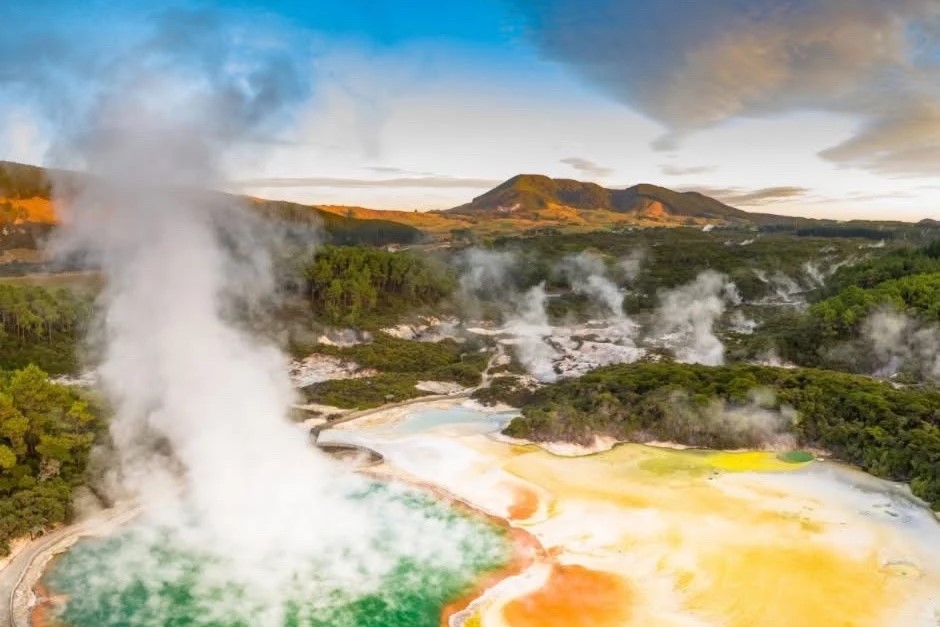
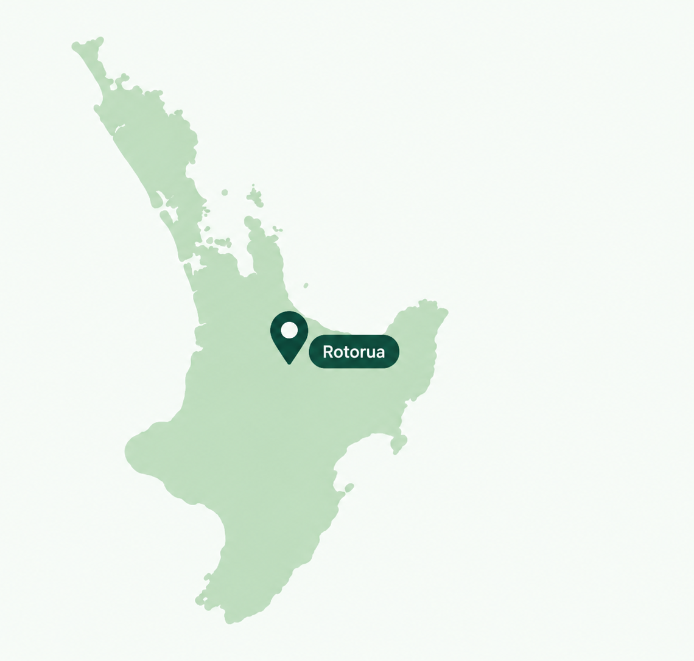

Bay of Plenty, North Island
Bay of Plenty, North Island
Rotorua is one of New Zealand’s best-known geothermal and cultural destinations. The area is famous for bubbling mud pools, steaming hot springs, geysers, and colourful geothermal landscapes. Rotorua is also an important centre of Māori culture, where visitors can experience traditional performances, food, stories, and local history.
Culture & Geothermal Wonders
Bay of Plenty, North Island
Hot Springs, Geysers & Māori Culture
Visitors can explore geothermal parks, see powerful geysers, relax in hot pools, and learn more about Māori traditions and culture. Rotorua combines natural geothermal activity with cultural experiences, making it one of the most distinctive places to visit in New Zealand.

Geothermal energy.
Rich Māori culture.
A landscape full of life.